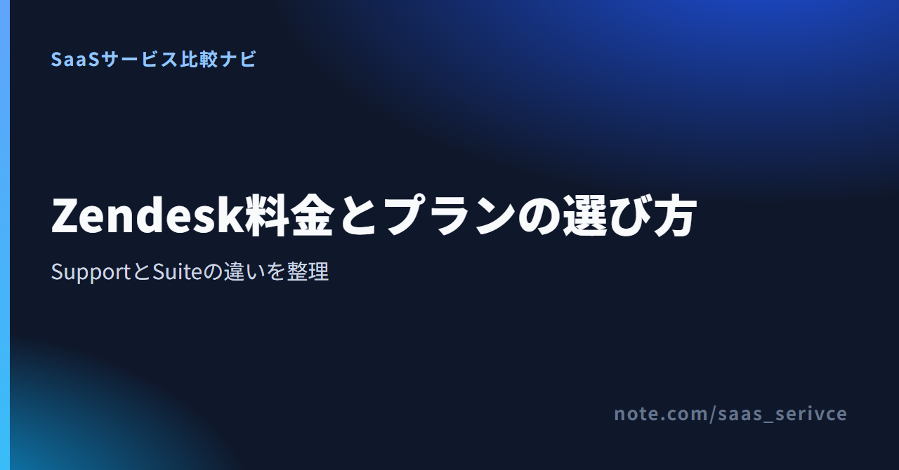
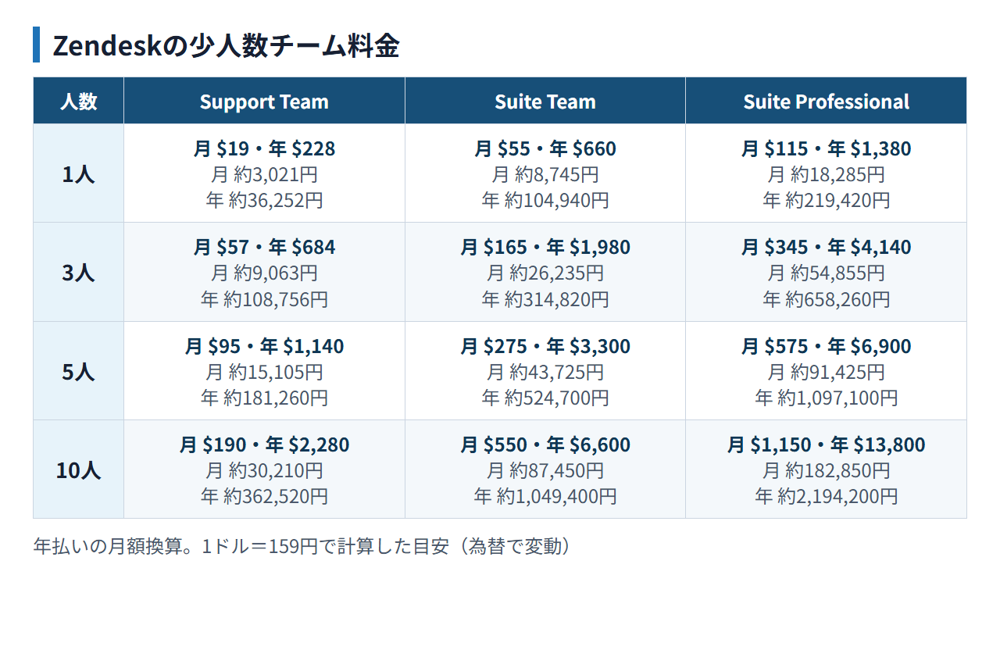

Zendeskの料金を調べると、SupportとSuiteが並んでいて、どちらを選ぶべきか迷います。しかも料金はエージェント1人ごとにかかります。表示価格だけで決めると、担当者を増やしたときに予算を超えることがあります。
まず決めたいのは、問い合わせをメール中心で受けるのか、チャットなど複数の窓口をまとめるのかです。そのうえで担当者数を掛ければ、自社が払う金額を見積もれます。この記事では、Zendeskの公式情報をもとに、料金プラン、無料トライアル、日本からの支払い、解約条件まで順に整理します。
Zendeskのプラン選びは、機能を細かく比べる前に「問い合わせ窓口」と「対応する人数」を決めると整理できます。結論は次の3点です。
公式サイトには現行プランが掲載されています。総額は、1席の価格に実際に対応する担当者数を掛けて確かめます。
Support Teamは、メールを軸に問い合わせをチケットとして管理したいチームの入口です。料金は1エージェントごとに発生するため、共用アドレスの利用者ではなく、Zendesk上で返信や処理をする担当者数を数えます。
メッセージングやチャット、テレフォニー、ナレッジベースまで一つにまとめるなら、これらを含むSuite Teamが比較対象です。Support Teamとの違いは、上位・下位というより、Zendeskに集約する窓口の広さです。
Suite Teamは、Support Teamの機能に加えて、AIエージェント、ナレッジベース、アクションビルダー、オムニチャネルルーティング、メッセージングとチャット、テレフォニーを利用できます。入口となるSuite Teamは1エージェント$55、上位のSuite Professionalは$115で、いずれも年払いの月額換算です。
Suite Professionalでは、管理者向けCopilot、アプリビルダー、文章作成ツール、クイックレポート、スキルベースルーティング、IVRツリー転送が加わります。担当者のスキルに応じた振り分けや電話のIVR転送が必要ならProfessional、そこまで不要ならTeamを起点に選べます。
現行の主な料金はSupport Team、Suite Team、Suite Professional、Suite Enterprise + Copilotの4つです。金額が公開されている3プランは、年払いを選んだ場合の1エージェントあたり月額です。年払いは月払いより20%割引と案内されています。
担当者が増えるほど合計額も同じ比率で増えます。メール以外にメッセージング、チャット、テレフォニーも扱うなら、Suite Teamとの価格差を見ます。
Support Teamとの機能差は、メッセージングとチャット、テレフォニー、ナレッジベース、オムニチャネルルーティングなどです。メール以外の窓口をZendeskへ集約するかどうかが、$19と$55を分ける判断軸になります。
Teamの倍以上の単価になるため、スキルベースルーティング、IVRツリー転送、クイックレポートなど、Professionalで追加される機能を使うかで判断します。これらが不要なら、まずSuite Teamで要件を満たせるかを確かめます。
Suite Enterpriseは、現行の料金ページでは「Suite Enterprise + Copilot」と表示されています。公開された定額ではないため、席数と必要な構成を伝えて見積もりを取ります。
公開価格の3プランは、次の章の考え方で席数を掛けて見積もれます。個別見積もりのSuite Enterprise + Copilotは、この計算には含めません。
Zendeskの表示価格は1エージェント単位です。少人数チームでも、1席の金額と実際の請求額は同じではありません。年払いの予算を組むなら、「1席の月額×担当者数×12か月」で計算します。
計算の基準は、Support Teamが$19、Suite Teamが$55、Suite Professionalが$115です。円換算は1ドル=159円換算（執筆時点の目安。為替で変動）とし、同じ条件で比べます。

席はZendesk上で対応する全員に必要です。兼任者も含めた1人・3人・5人・10人の各ケースを、同じ換算率で月額と年額に直して比べます。
上の計算は、公開価格の3プランの基本料金だけを使った目安です。追加する場合、Copilotは1エージェントあたり月額$50、Contact Centerは$83で、どちらも席数に応じて総額が増えます。AIエージェントは自動解決数に応じた従量課金なので、固定単価の2機能とは分けて計算します。
たとえばSuite TeamにCopilotを付ける場合、基本料金$55だけでは予算になりません。無料トライアルでは、基本プランの機能だけで運用できるか、Copilotや電話対応が必要かを切り分けます。
Zendeskには、期限なく使い続けられる無料プランはありません。「Zendeskを無料で使いたい」と考えている場合は、契約前の無料トライアルを利用する形になります。
Zendeskの無料プランは「なし」、無料トライアルは「あり」です。トライアルが終わった後も無料枠で使い続けられるHelp ScoutやTidioとは料金設計が異なります。
費用をかけずに長く運用したいなら、Zendeskを試してから無料枠のある代替サービスへ移る選択肢も含めて比較します。Zendeskを本命にする場合は、トライアル期間を機能確認の時間として使い、終了後の有料契約を前提に予算を立てます。
通常の無料トライアルは14日間で、開始時のクレジットカード登録は不要です。終了後も継続して使うには、有料プランを購入します。
トライアル終了後のデータ保持については、Zendeskの案内とFree Trial Termsで記載が一致していません。残す必要があるチケットや設定は、終了前にエクスポートしておくのが確実です。
Zendesk for Startupsは、誰でも利用できる常設無料プランではありません。新規契約者で、従業員250人未満、Series B以下、設立10年未満のテック企業が対象です。従業員50人以上の場合は、対象パートナーからの紹介も必要になります。
承認されるとSuite Professionalを最大50席まで利用でき、全承認者に6か月、条件を満たす場合は最長2年の無償期間があります。適用期間は審査結果によって異なるため、承認時に示される終了日と更新条件を基準に予算を組みます。
Zendeskは日本語の公式サイトとヘルプがあり、日本から契約を検討できます。ただし、支払い手段はアカウント条件によって異なるため、候補に挙がる方法をすべて選べるとは限りません。
Supportアカウントで案内されている通貨は、USD、EUR、GBP、BRLです。オンライン購入はクレジットカードが基本で、利用できる通貨と決済手段はアカウント条件によって異なります。
支払い方法の総論にはデビットカード、PayPal、銀行振込、口座振替、小切手も含まれますが、日本からすべてを選べるわけではありません。セルフサービスの口座振替は米国の対象アカウントに限られ、銀行振込や小切手などは営業担当への連絡が必要です。JCBなど日本発行カードのブランド別対応は、購入画面で確認します。
請求書は、アカウントオーナーまたは請求管理者が管理画面からPDFで閲覧・ダウンロードできます。経理担当者が直接取得するなら、その担当者に請求管理者の権限を付けておきます。
海外SaaSの消費税やインボイスの扱いは、契約主体や取引条件によって判断が変わるため、必要に応じて税理士に確認してください。
Zendeskは日本語UIに対応し、日本語の公式サイトと日本語ヘルプも用意されています。料金、請求書、解約に関する日本語の案内も確認できます。
一方、日本語担当者による個別サポートの提供範囲は公開情報だけでは判断できません。日本語での個別対応が契約条件なら、購入前に利用予定プランのサポート窓口と言語を問い合わせます。
Zendeskの席数課金が予算に合わない場合は、同じ「問い合わせ対応ツール」でも料金設計が異なるサービスを比べます。近い用途ならHelp Scout、ライブチャット中心ならTidioが候補です。
Help ScoutのFreeは、5ユーザー、Inbox 1件、Docs 1件、月100 contactsまで使えます。少人数で問い合わせ窓口をひとつに絞り、まず無料で始めたい場合の料金面の候補です。
有料プランは月払い表示で、Standardが1ユーザー$25／月、Plusが$45、Proが$75です。StandardとPlusにはカード不要の15日間トライアルがあります。PDF請求書のダウンロードとメール送付にも対応しています。一方で日本語UIと日本語サポートは確認できていないため、日本語運用まで含む代替とは断定できません。
TidioのFreeは10席を利用できますが、課金対象会話は月50件です。席数だけを見ると余裕があるように見えても、問い合わせ量が増えるチームは会話数の上限を先に確認する必要があります。
有料のStarterは年払い表示で$24.17／月、Growthは月250会話で$49.17／月からです。ライブチャットを主な窓口にする場合の料金面の候補ですが、日本語UIと日本語サポートは確認できていません。Zendeskと同じ運用を置き換えられるとは限らないため、問い合わせ経路、月間会話数、利用言語を分けて判断します。
Zendeskを契約する前に、開始時の料金だけでなく、人数や運用が変わったときの戻し方も押さえておきます。解約とプラン変更では、反映される時期が異なります。
通常はアカウントオーナーが管理画面から解約します。管理対象アカウントなど、画面から解約できない契約ではサポートへの連絡が必要です。効力が発生するのは現在の請求期間末なので、それまでに必要なデータを移行します。
サービスプランの変更は、契約条件により即時または更新時に反映されます。年払いから月払いへの変更は、承認を受けたうえで次回請求サイクルの開始時に切り替わります。
年契約途中の差額や返金条件は一律に公開されていません。下位プランへ移る場合は、変更日と請求への反映をアカウント単位で確認します。
申し込み前に契約期間と変更条件を確認しておけば、人数の増減や運用変更があったときも、次の判断を早められます。
料金を決める直前に残りやすい疑問を、確認できている条件に絞って回答します。
常設の無料プランはないため、無料のままでは使い続けられません。通常の無料トライアルは14日間で、開始時のカード登録は不要です。終了後も継続するには有料プランを購入します。
管理画面から請求書PDFを閲覧・ダウンロードできます。経費処理に使う場合は、契約名義や請求先情報も申し込み時にそろえておきます。
解約は現在の請求期間末に効力が発生します。契約終了に合わせて、問い合わせ対応の移行と必要なデータの整理を進めます。
メール中心ならSupport Team、チャットや電話までまとめるならSuite Teamが出発点です。スキルベースルーティングやIVR転送が必要ならSuite Professionalを検討します。料金は選んだプランの単価に、Zendesk上で対応する担当者数を掛けて見積もります。
申し込み前に、次の5点を確認します。
無料枠を優先するならHelp Scout、ライブチャット中心ならTidioが料金面の比較候補です。ただし両サービスの日本語UI・日本語サポートは確認できていないため、日本語運用を前提に同列比較はできません。
SupportとSuiteの機能境界、席数、追加機能の3点を分ければ、基本料金だけを見た予算不足を避けられます。